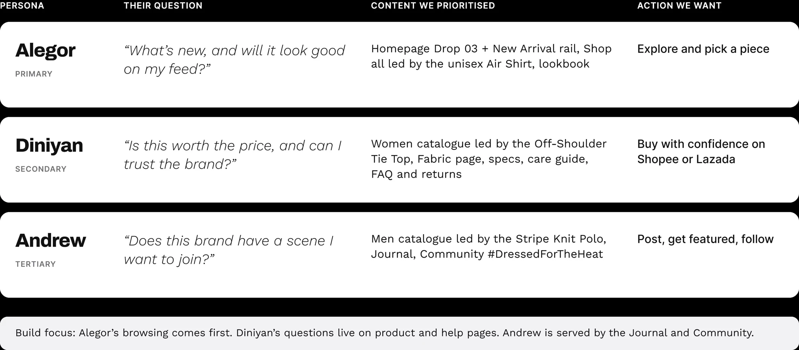
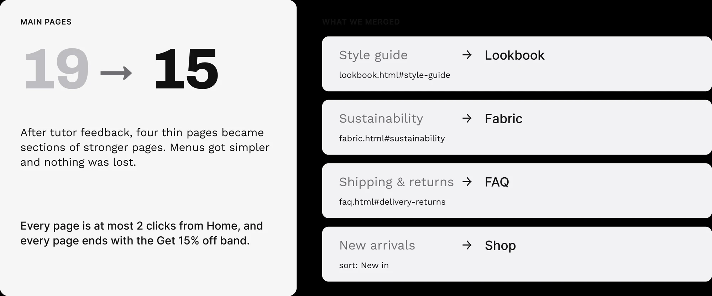

TEAMAisha · Celine · Michael · RizkiA collaborative student project
COURSECS2024Web Design & Technologies
DELIVERABLEFashion websitePersonas · Content · Navigation · Web design
01 / THE BRIEF
Looks good online. But will it work in real life?
A hot walk to the MRT. A cold office. One outfit for both.
Tee-Duh reimagines the brand Drunk Dad in the Lobby for everyday life in Singapore. The project’s name comes from teduh: the calm of a shaded spot.
The challenge was to bring that idea into a fashion website. Product photography can create interest, but shoppers still need to understand the fabric, judge the fit and decide whether a piece is worth the price.
The site’s job is to build that confidence, then connect shoppers to Shopee or Lazada to complete their purchase.
12pieces in Drop 03
S$35–79planned product price range
2marketplace destinations
A brand and product experience. Checkout happens on the marketplace.
WHAT INFORMED THE DIRECTION
Start with the context, then make the choices specific.
01
Daily conditionsSingapore’s heat, humid commutes and air-conditioned interiors.
02
Marketplace reviewsReviews of similar basics on Shopee and Lazada, as documented in the deck.
03
Visual benchmarkingFashion layouts from Hanzify’s Lite 001 template.
04
Tutor feedbackA simpler sitemap with fewer, stronger pages.
02 / THE PEOPLE BEHIND THE PAGES
Three reasons to browse. Three different reasons to hesitate.
The personas shaped what each shopper sees first, which questions the content answers, and where the journey should lead.
Design personas, from the project deck. These represent intended customer behaviours and scenarios. They are not presented as interviewed participants or validated customer segments.
01
ALÉGOR / THE SOCIAL STYLER
Wants to stand out. Needs to know the fit.
21 · University student Fashion micro-influencer
DISCOVERS THROUGH
TikTok, Instagram, creators and friends
DECISION CONTEXT
A new top is a considered treat. It needs to work with the wardrobe he already has.
THE HESITATION
A striking product image does not show how a unisex piece will fit his body.
What this changes in the design
01
Put discovery first.
Drop 03 and the New Arrival rail lead the homepage. Shop All opens with the Air Shirt, priced at S$59.
02
Turn styling into evidence.
Connect the Lookbook to products so he can see proportions and imagine an outfit.
03
Answer the fit question.
Model measurements, fit notes and a size guide support the choice before the marketplace handoff.
PROPOSED JOURNEY
Instagram Reel → New drop → Air Shirt + size guide → Shopee
02
DINIYAN / THE DETAIL-DRIVEN BUYER
Likes the design. Needs proof of value.
26 · Marketing executive Casual office in the CBD
DISCOVERS THROUGH
Google searches, helpful guides and brand comparisons
DECISION CONTEXT
She needs work outfits for the heat and enough detail to judge an unfamiliar brand for herself.
THE HESITATION
“Premium quality” means little when fabric, care and return information are hard to find.
What this changes in the design
01
Earn attention with useful content.
Journal guides lead into the Women catalogue, with the S$42 Off-Shoulder Tie Top as its lead product.
02
Make the detail easy to inspect.
Fabric, care and model-size information explain what she is paying for and how the piece fits her day.
03
Make the next step feel clear.
Visible FAQ and 30-day return information address uncertainty before she continues to marketplace checkout.
Friends’ posts, gigs, art markets and indie pop-ups
DECISION CONTEXT
He mixes thrifted finds with independent labels and only adds a few pieces each year.
THE HESITATION
A generic brand story and a feed of sales posts do not give him a reason to take part.
What this changes in the design
01
Show a style he can recognise.
The Men catalogue leads with the S$55 Stripe Knit Polo, styled alongside pieces that suit his existing wardrobe.
02
Give the community a purpose.
The Lookbook, Journal and Community pages create space for outfits and stories beyond product listings.
03
Invite participation.
The content plan proposes monthly themes and permission-based outfit features under #DressedForTheHeat.
PROPOSED JOURNEY
Friend’s post → Community + Lookbook → Men / Polo → Shopee → Outfit post
THE PRIORITY DECISION
Alégor leads the browsing experience. Diniyan’s questions shape product and help pages. Andrew’s interests shape the Journal and Community. Each persona has a purpose in the architecture.
See the original persona-to-content mapping +

Source: Tee-Duh project deck, persona priority mapping. The questions are persona scenario copy, not interview quotations.
03 / FROM CONTEXT TO DESIGN
Make every page answer a real question.
The deck connects shopping concerns to concrete design responses. That connection is more useful than a persona’s biography alone.
Research context → shopper need → design response
Context in the deck
What the shopper needs
Design response
Hot commute, cold interiors
Know how a piece will feel throughout the day.
Fabric and care explanations, an aircon layering story and relevant Journal articles.
Marketplace sizing feels uncertain
Understand proportions and choose a size.
Model measurements, fit notes, size-guide tabs and quick-size controls.
Listings compete mainly on price
Judge what makes the product worth considering.
A consistent visual story backed by product and fabric detail.
Familiar marketplace checkout
Continue to a recognisable purchase destination.
Explicit “Buy on Shopee” and “Buy on Lazada” actions on product pages.
REFINING THE SITEMAP
19→15
Fewer main pages. Stronger destinations.
Tutor feedback prompted four thin pages to become sections inside related pages. The planned structure aimed to keep each page within two clicks of Home.
15 main pages, plus 12 product pages and six Journal articles.
Style Guide↳Lookbook
Sustainability↳Fabric
Shipping & Returns↳FAQ
New Arrivals↳Shop / New In
Keep related information together so the menu can stay focused.
See the original sitemap decision +

Source: Tee-Duh project deck, sitemap refinement. The two-click route is a design goal, not a reported usability-test result.
04 / THE DESIGNED EXPERIENCE
Inspire the browse. Support the decision.
Original screens from the project deck. Explore how the homepage, catalogue and product page carry the shopper from interest to action.
Homepage · Original design screen from the project deck
01 / INSPIRE
Start with a world the shopper wants to enter.
The three-panel fashion image gives Drop 03 a clear visual identity. “Dressed for the heat” connects the styling to the brand’s Singapore context.
PERSONA CONNECTION
Alégor’s discovery comes first: the new drop and collection action are immediately visible.
01 / 03
THE VISUAL DIRECTION
Let the clothes carry the colour.
A monochrome interface keeps attention on product photography. The project uses Archivo for logo and headlines, Inter for product information and actions, and Work Sans for body text. A calm, weather-aware voice makes the brand feel specific to daily life.
01 / Ink02 / Grey03 / White
↗
Give the journey a clear destination.
The product page shows fit choices and price before offering named marketplace actions. The website supports a purchase decision; the transaction takes place on Shopee or Lazada.
05 / WHAT THIS PROJECT TAUGHT ME
A persona should change what you build.
01
Turn a person’s hesitation into a design requirement.
Alégor’s uncertainty about fit leads to linked styling and sizing information. Diniyan’s need for proof leads to product detail. These connections make personas useful in the work.
02
Prioritise the journey, then organise the content.
The homepage does not have to serve every motivation equally. Giving discovery a clear lead, with detail and community in the right places, creates a more focused structure.
03
Keep the outcome honest and testable.
A complete design can show what we intend to improve. Demonstrating that it works requires observing shoppers and measuring the journey after a baseline exists.
WHAT TO VALIDATE NEXT
Can shoppers find the proof they need?
Ask people with these shopping motivations to find a suitable piece, check its fit and care, and explain where they would complete a purchase. Watch for uncertainty at each step.
The deck proposes a 20% marketplace-sales increase over three months as a marketing target. No measured conversion or sales results are reported. Store clicks, sign-ups and redemptions would need a baseline before evaluating impact.
This case study presents the team’s shared work. Project team: Aisha Tasya Aulia, Celine Emily Wijaya, Michael Joseph Candra and Muhammad Rizki.
06 / TRY THE EXPERIENCE
From the case study to the collection.
Explore the original Tee-Duh website: browse Drop 03, inspect a product and follow the shopping journey.
The supplied project deck is the source for the personas, research inputs, design decisions, screen images and marketing plan presented here. It is a single-page PDF. The case study distinguishes intended customer journeys and targets from measured results.